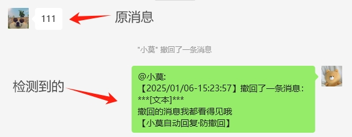
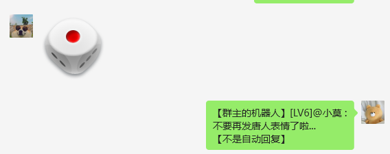
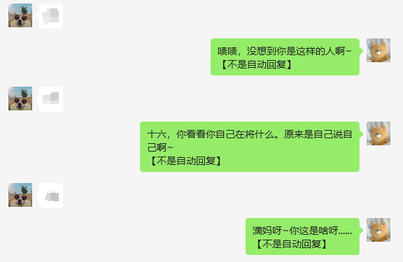
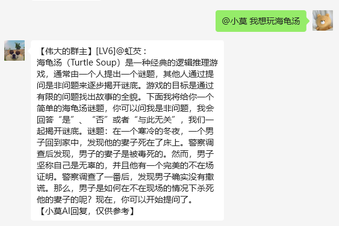

作者：虹芡
天才虹芡！智慧小莫！
一、防撤回
这玩意最初在2024.7月的时候就想弄了...但是没有这个技术...结果防撤回终于在2025.1.6做出来并上线了！（自动回复这个项目在2024.2月就启动了）[图一]
[图1] · 防撤回
为什么不把撤回的消息发出来呢？这些撤回的消息我在终端都看得到，这主要是要保持神秘一点好
二、不是自动回复
这玩意也是在2025.1月上线的，他主要有两个功能：一是对发送[动画表情]的有个随机函数，有可能会发一句话，也有可能啥都不发[图2-1]；二是对发[不好的词语]的会随机发送一句话[图2-2]
[图2-1] · 不是自动回复
[图2-2] · 不是自动回复（这个截屏的时候还没有引用功能，现已加）
三、聊天机器人
作为一个聊天机器人，不接入ChatGPT怎么叫聊天机器人...于是我弄到了3个模型：moonshot-v1-8k(KimiAI)，gpt-4o-mini(OpenAI)，gpt-3.5-turbo(OpenAI)但是我选择了moonshot-v1-8k作为"小莫"的接口[图3]
[图3] · 聊天机器人
emmm...没了